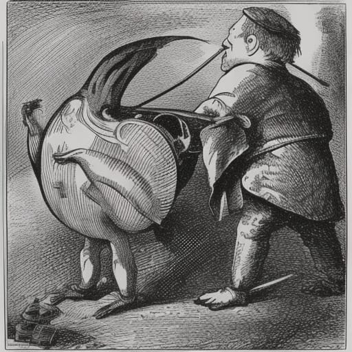

Condensed Jubjub

The meal of choice of the daring jabberwock slayer and the enterprising snark hunter
Best kept in ivory jars, or in mahogany kegs.
Ingredients
- Mangos
- Kiwis
- Tomatoes
- Cucumbers
- Concord grapes
- Bananas
- Pineapples
- Raspberries
- Blackberries
- Tangerines
- Guavas
- Avocados
Steps
Note: Wash thoroughly with water and apple vinegar. Peel if needed/desired. The radius of the circle is six meters (r = 6m). The angle between the circle and the ground is either 0 degrees or 90 degrees. The latter is more challenging, but more rewarding. Move clockwise. Begin at twelve o'clock.
- Fill the first hour with tomatoes
- Fill the second hour with raspberries
- Fill the third hour with tangerines
- Fill the fourth hour with mangos
- Fill the fifth hour with bananas
- Fill the sixth hour with pineapples
- Fill the seventh hour with guavas
- Fill the eighth hour with cucumbers
- Fill the ninth hour with avocados
- Fill the tenth hour with kiwis
- Fill the eleventh hour with grapes
- Fill the twelfth hour with blackberries
- Move back 6 meters
- Start over from step 1
Return to Home